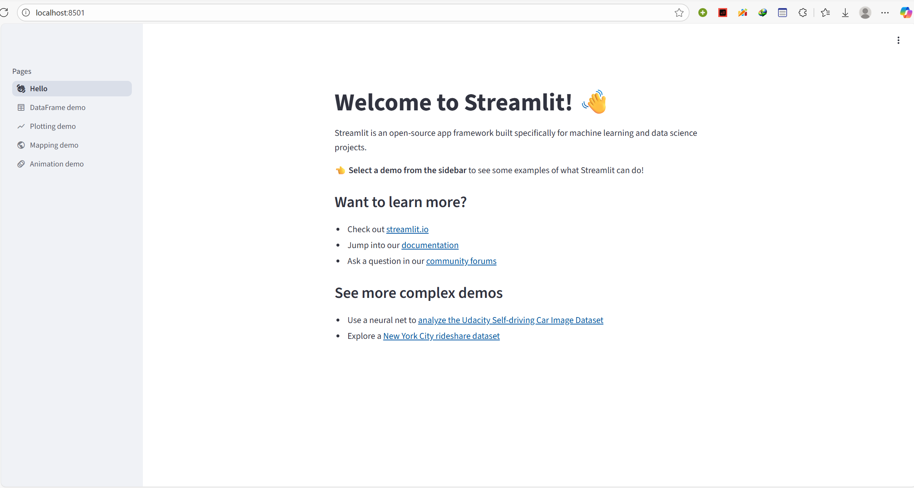

前端
由于我对前端的若干技术几乎一无所知，并且仅作展示用，所以我使用streamlit来构建前端界面。很久以前就听说过streamlit，今天才发现它是如此的好用。
安装streamlit
pip install streamlit
验证安装成功:
streamlit hello

见到这个界面，说明安装成功了。
学习如何使用
我学习了这篇官方文档。
仅用18行代码，就构建了一个llm的界面。
import streamlit as st
from langchain.llms import OpenAI
st.title('🦜🔗 Quickstart App')
openai_api_key = st.sidebar.text_input('OpenAI API Key')
def generate_response(input_text):
llm = OpenAI(temperature=0.7, openai_api_key=openai_api_key)
st.info(llm(input_text))
with st.form('my_form'):
text = st.text_area('Enter text:', 'What are the three key pieces of advice for learning how to code?')
submitted = st.form_submit_button('Submit')
if not openai_api_key.startswith('sk-'):
st.warning('Please enter your OpenAI API key!', icon='⚠')
if submitted and openai_api_key.startswith('sk-'):
generate_response(text)
我们只需要在此基础上进行改进即可。
构建app.py
侧边栏
首先，由于需要在网页上展示，肯定不能使用我们本地.env文件中的api_key，因此我们需要放一个侧边栏来让用户填写api_key和base_url。
st.sidebar.title("🔑 配置 API")
st.sidebar.markdown("密钥不会被存储，仅用于当前会话。")
api_key_input = st.sidebar.text_input(
"API Key",
type="password", # 使用 type="password" 来隐藏密钥
help="输入你的 API Key (例如 sk-...)"
)
base_url_input = st.sidebar.text_input(
"Base URL",
value="https://www.dmxapi.cn/v1", # 给个默认值
help="输入你的 API Base URL"
)
这时就得同步修改后端的逻辑了，之前都是写死的，现在得传参才行。简单来说就是在__init__时传入这两个参数，然后建立self.llm或self.problem_strategy/self.solution_strategy，此处就略去了。
主界面
先检查是否填写了api_key，如果没有那就不显示后续界面。
st.title("🦜🔗 Luogu Agent")
@st.cache_resource
def get_analysis_agent(api_key, base_url):
print(f"--- [Streamlit] 正在尝试初始化 AnalysisAgent... ---")
return AnalysisAgent(api_key, base_url)
analysis_agent = None
if api_key_input and base_url_input:
try:
analysis_agent = get_analysis_agent(api_key_input, base_url_input)
except Exception as e:
st.error(f"🚫 Agent 初始化失败: {e}")
st.warning("请检查侧边栏的 API Key 和 Base URL 是否正确。")
st.stop()
else:
st.info("👈 请在左侧边栏输入 API Key 和 Base URL 来启动应用。")
st.stop() # 如果没提供密钥，就停在这里，不显示后续界面
如果已经填写完了，那么就展示题目输入框。
problemid = st.text_input("输入洛谷题目 ID (例如: P1238)", "P1238")
接下来，做一个开始分析的按钮，并写出主要的逻辑：
- 我们需要一个异步的状态栏，等待爬虫返回题目和题解。
- 我们需要调用LLM，生成详细的题解和代码。这里为了防止用户等太久，还需要流式输出。
- 解析模型给出的json文件，并生成markdown进行展示
if st.button("🚀 开始分析"):
if not problemid:
st.warning("请输入题目 ID")
st.stop()
# [!] 核心：这是我们的“舞台”，所有内容都会在这里更新
placeholder = st.empty()
raw_crawler_data = {}
# --- 1. 爬虫 (处理异步) ---
try:
with st.status(f"🔍 正在爬取 {problemid} 题目和题解...", expanded=True) as status:
brouser_config = BrowserConfig(headless=True, proxy=None)
async def crawl_main():
async with AsyncWebCrawler(config=brouser_config) as crawler:
agent = LuoguCrawlerAgent(api_key_input, base_url_input, crawler, cache_dir=CACHE_DIR)
st.write(f"正在抓取 {problemid}...(第一次抓取可能需要较长的时间⏳)")
data = await agent.run(problemid, max_solutions=3)
st.write("✅ 抓取完成")
return data
# 在同步的 Streamlit 回调中运行异步爬虫
raw_crawler_data = asyncio.run(crawl_main())
status.update(label="爬取成功!", state="complete")
except Exception as e:
placeholder.error(f"爬虫阶段失败: {e}")
traceback.print_exc() # 打印到终端
st.stop()
# --- 2. 检查爬虫数据 ---
problem_data = raw_crawler_data.get("problem", {})
solutions_data = raw_crawler_data.get("solutions", [])
if "error" in problem_data or not problem_data:
placeholder.error(f"爬虫未获取到有效数据: {problem_data.get('error', '未知错误')}")
st.stop()
# --- 3. 构建提示 & 调用 LLM (流式) ---
placeholder.info("🧠 正在调用 LLM...")
try:
# [!] 调用 Agent 的“零件”
system_prompt, user_prompt = analysis_agent._build_prompts(problem_data, solutions_data)
# [!] 直接访问 agent 的 llm 属性来获取流
stream = analysis_agent.llm.chat.completions.create(
model="glm-4.6",
messages=[
{"role": "system", "content": system_prompt},
{"role": "user", "content": user_prompt}
],
thinking={"type": "disabled"},
stream=True
)
full_content = ""
stream_display = "" # 这是流式展示给用户的
for chunk in stream:
if not chunk.choices: continue
delta = chunk.choices[0].delta
if hasattr(delta, 'content') and delta.content:
full_content += delta.content
stream_display += delta.content
placeholder.write(stream_display + "▌")
# 流式结束，显示完整 JSON
placeholder.code(full_content, language="json")
st.success("✅ LLM 流式响应接收完毕")
except Exception as e:
placeholder.error(f"LLM 调用失败: {e}")
traceback.print_exc()
st.stop()
# --- 4. 解析 & 覆盖 ---
with st.spinner("正在解析结果并生成报告..."):
# [!] 复用 Agent 的解析和提取“零件”
extracted_str = analysis_agent._extract_json_string(full_content)
parsed_data = analysis_agent._parse_to_dict(extracted_str)
if parsed_data:
# [!] 用我们前端的辅助函数生成 Markdown
final_md = build_markdown_from_data(problemid, parsed_data)
# [!] 关键：用 Markdown 覆盖掉 placeholder 里的 code
placeholder.markdown(final_md)
try:
analysis_agent._save_json_result(problemid, parsed_data)
analysis_agent._save_markdown_result(problemid, parsed_data)
except Exception as e:
st.warning(f"保存文件时出错 (但不影响显示): {e}")
else:
# 解析失败
st.error("❌ 无法解析 LLM 的 JSON 响应。")
analysis_agent._save_error(problemid, full_content)
# 此时 placeholder 里仍然显示的是完整的原始 JSON，方便调试
部署
在虚拟环境中，运行：
pip freeze > requirements.txt
导出python依赖，并删掉其中所有含有 @file:/// 的包，这些是本地的，streamlit云端不认识。
由于playwright浏览器运行可能还需要一些系统库，需要写入packages.txt中：
libnss3
libnspr4
libdbus-1-3
libatk1.0-0
libatk-bridge2.0-0
libcups2
libdrm2
libatspi2.0-0
libxcomposite1
libxcursor1
libxdamage1
libxfixes3
libxrandr2
libgbm1
libxkbcommon0
libpango-1.0-0
libcairo2
libgdk-pixbuf2.0-0
libgtk-3-0
上面的步骤都完成后，发现依然不行，还需要运行 playwright install。而streamlit好像不提供终端，因此选择在 app.py 的开头调用 subprocess 尝试安装，发现居然成功了。
@st.cache_resource
def install_playwright():
"""
一个只运行一次的函数，用于在 Streamlit Cloud 启动时
安装 Playwright 所需的浏览器。
"""
print("--- [Playwright] 正在安装浏览器... ---")
# 我们调用 "python -m playwright install chromium"
# "sys.executable" 确保我们用的是当前环境的 python
command = [sys.executable, "-m", "playwright", "install", "chromium"]
try:
# 运行命令
result = subprocess.run(
command,
stdout=subprocess.PIPE,
stderr=subprocess.PIPE,
text=True,
check=True # 如果命令失败，则抛出异常
)
print(f"--- [Playwright] 安装成功: {result.stdout} ---")
except subprocess.CalledProcessError as e:
# 如果安装失败，显示错误并停止应用
print(f"--- [Playwright] 安装失败: {e.stderr} ---")
st.error(f"Playwright 浏览器安装失败: {e.stderr}")
st.stop()
except FileNotFoundError:
st.error("无法执行 Playwright 命令。请确保 'playwright' 在 requirements.txt 中。")
st.stop()
install_playwright()
至此，这个项目的基本功能就算完成了🥳